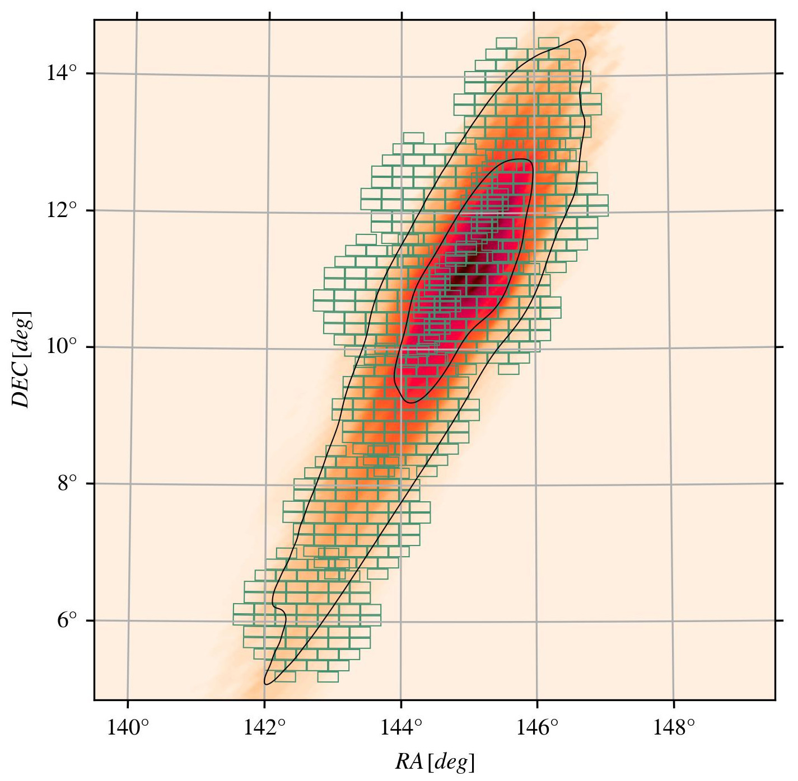

Current Research
As a physicist, I focus on a few different things.
The Vera Rubin Observatory. Myself for scale (bottom right).
Astronomical Instrumentation
The LSST Camera: I spent July 2024 - July 2025 commissioning the LSST Camera for the Vera Rubin Observatory. This includes operation, electro-optical chracterization, and defect analysis in the focal plane. Prototype image sensors: At UZH, we characterize prototype image sensors for future cosmology experiments, particularly skipper CCDs. Robotic positioners: In addition to image sensors, I characterize robotic positioners used in multi-object spectroscopic instruments, including but not limited to DESI, SDSS-V, and Spec-S5. I helped build a test bench using a telescope mount to characterize the performance of prototype positioners under different gravity conditions.Integral Field Spectrographs: Before my PhD, I assembled, integrated, and tested many optical and mechanical components of the Large Lenslet Array Magellan Spectrograph (LLAMAS) for the 6.5-meter Magellan Telescopes at Las Campanas Observatory in Chile.
The LSST team experiencing the first photon acquired using the LSST Camera at Rubin Observatory. I co-led camera operations during LSSTCam commissioning, including the night of first photon.
Cosmology
Dark Siren Forecasting with LSST: I am leading an effort in the Dark Energy Science Collaboration to forecast the constraining power of dark sirens using simulated LSST observations and simulated gravitational wave (GW) events. This is in preparation of applying this method to LSST data when the first data release is made public in late 2026.Dark Siren Measurements with DELVE: I am leading an effort to measure H0 using the dark siren method, the most recent catalog of GW candidate events, and the DECam Local Volume Exploration (DELVE) Survey.Dark Siren Measurements with DES: I contributed to the effort to measure H0 using the dark siren method, the GW candidate events up to Observing Run 4 (O4) b, and the Dark Energy Survey.
Transient Astrophysics
Rubin Observatory ToO: I led the observation, data processing, and analysis of the first Target-of-Opportunity (ToO) events observed by the Rubin Observatory, including candidate GW events S250725j, S251112cm, and interstellar comet 3I/ATLAS. DESGW: In response to gravitational wave events from the LIGO-VIRGO-KAGRA gravitational wave network, I have observed using the Dark Energy Camera (DECAM) for 10+ gravitational wave events in LVK O4, and analyzed the obtained observations. DESGW - J-GEM: I led coordination between the DESGW group and the Japanese collaboration for Gravitational wave ElectroMagnetic follow-up (J-GEM) for a joint observation of S250328ae using DECam and the Prime Focus Instrument at Subaru Observatory.
AT2025sib, one of the four reported Rubin candidates in GCN 41595, as viewed by LSSTCam and DECam, each with a field of view of ~14" on each edge. The top row of images are from Rubin Observatory, the bottom row of images were taken with DECam. Search (left), template (center), and difference (right) images. The template images for Rubin difference imaging are from DES DR2 co-additions for this region of the sky.
Infrastructure for Astrophysics
Rubin Observatory ToO system: I implemented the Rubin Target of Opportunity strategy into the Rubin Scheduler, ensuring that Rubin observatory can observe gravitational wave, neutrino, and other time-sensitive astrophysical events to augment the LSST survey.DESGW alert processing: For the Dark Energy Survey (DES), I have tested and implemented improvements to Dark Energy Survey gravitational wave (DESGW) pipeline, including changes to the telescope strategy and real-time monitoring code.

The observing plan for the gravitational wave event S250328ae executed by the DESGW team on March 29, 2025.
Back to top
Outreach
I have been lucky enough to engage with the public to discuss science, physics, and astronomy.
I provided several interviews to news outlets on behalf of Rubin Observatory, including the BBC on two occasions , the Wall Street Journal , and Science News .
From 2023 - 2024, I led a high school group of students to operate a solar telescope and take images of the sun during the 2023 annular eclipse and 2024 total eclipse. I encouraged safe and responsible observations and discussed the science of eclipses with the public through several local news outlets, including NBC-5 , Vermont Public Radio , and the Essex Reporter
With support from others, I helped to organize and volunteered at the Conferences for Undergraduate Women in Physics (CUWiP) 2024 at the University of Michigan-Ann Arbor
In 2023, I led an exhibition showcasing physics experiments to elementary school students at the Metro Detroit Youth Day in Belle Isle, Detroit, MI.
In 2023, I designed an art installation in the University of Michigan Physics help room showcasing previous experiences by graduates of the undergraduate program, highlighting struggles they overcame and professional success in their later lives
From 2016 - 2020, I provided tours and open nights at the Wheaton College Observatory in Norton MA, showcasing features of different telescopes to local tour groups.
Back to top
CV
My most recent C.V. is available for view or download here.
Back to top
Back to top